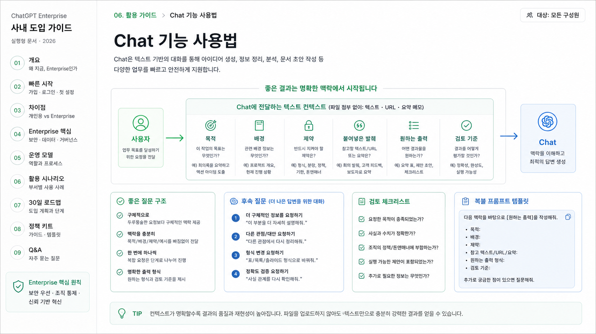

문서 요약
회의록, 정책 문단, 공지 초안을 핵심 메시지와 액션 아이템으로 정리합니다.
Chat
Chat은 요약, 초안 작성, 비교, 검토, 의사결정 보조에 가장 범용적으로 쓰입니다. 파일 첨부 없이 사용할 때는 작업 목표와 필요한 발췌문을 대화 안에 명확히 넣는 것이 핵심입니다.

문서, 이미지, 스프레드시트 파일은 올리지 않는다고 가정합니다. 필요한 정보는 텍스트로 발췌하거나 직접 요약해서 넣습니다.
회의록, 정책 문단, 공지 초안을 핵심 메시지와 액션 아이템으로 정리합니다.
메일, 보고서 문단, FAQ, 안내문, 슬랙 공지를 대상 독자에 맞게 씁니다.
논리 누락, 모호한 표현, 과도한 주장, 다음 질문을 찾아 개선안을 받습니다.
입력 방식
| 입력 요소 | 어떻게 쓰나 | 예시 |
|---|---|---|
| 목표 | 결과물이 무엇이어야 하는지 한 문장으로 적습니다. | 임원 보고용 5줄 요약을 만들어줘. |
| 발췌문 | 원문 전체 대신 판단에 필요한 문단만 붙입니다. | 아래 회의 메모에서 결정사항과 보류사항을 분리해줘. |
| 제약 | 톤, 분량, 금지 표현, 검토 기준을 지정합니다. | 고객에게 확정처럼 보이는 표현은 쓰지 마. |
| 출력 형식 | 표, 체크리스트, 메일, 보고서 문단처럼 형태를 정합니다. | 표로 작성하고 마지막 열에 담당자를 제안해줘. |
실무 흐름
목표, 배경, 발췌문, 출력 형식을 넣고 첫 답변을 받습니다.
빠진 관점, 위험한 표현, 확인할 사실을 따로 점검하게 합니다.
독자, 분량, 톤을 바꿔 최종 문서에 바로 붙일 수 있게 다듬습니다.
복사해서 쓰기
역할: 내 업무 문서를 검토하고 초안을 만드는 파트너
목표:
대상 독자:
배경:
첨부 파일은 사용할 수 없으므로 아래 텍스트만 근거로 작업해줘.
텍스트 발췌:
원하는 출력:
- 형식:
- 분량:
- 톤:
검토 기준:
- 불확실한 내용은 단정하지 말 것
- 민감정보가 있으면 표시할 것
- 추가 질문은 최대 3개만 할 것